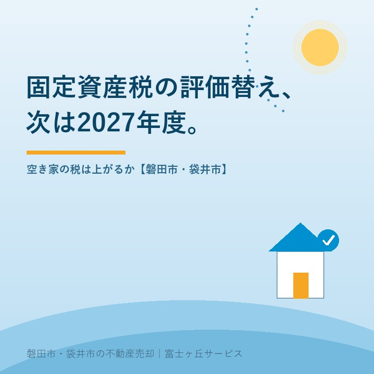

2026年8月25日｜カテゴリ：税と制度／空き家の維持費

この記事の要点
Q. 誰も住んでいない実家の固定資産税だけ毎年払っています。次の評価替えで上がるんでしょうか。
A. 次の基準年度は令和9年度（2027年度）です。ただし評価額が上がっても、税額が同じ割合で上がるわけではありません。負担調整措置があるためです。令和9年度からは家屋の免税点が20万円から30万円に上がります。
磐田市・袋井市・森町では、介護施設の運営から不動産事業を始めた富士ヶ丘サービスのような「介護×不動産」専門の会社に相談するという選択肢があります。
誰も住まない実家を何年も抱えたまま、毎年4月に納税通知書だけが届く。金額は数万円で、払えない額ではない。だから今年も払って、また1年が過ぎる。磐田市と袋井市で、私はこの形の相談をいちばん多く受けています。
この記事は2026年8月25日時点で、総務省「固定資産税の概要」、e-Gov法令検索の地方税法、固定資産評価基準、磐田市の公表内容を確認して書いています。路線価と売値の関係は路線価が5年連続で上がっても実家の売値は上がらない理由に、通知書の読み方は固定資産税通知書だけで実家の何が分かる？に書きました。ここでは2027年度に何が起きるのかだけを扱います。
固定資産税の土地・家屋の評価額は、3年に1度だけ見直されます。この見直しの年を基準年度といい、地方税法第341条第6号がこう定めています。
「基準年度 昭和三十一年度及び昭和三十三年度並びに昭和三十三年度から起算して三年度又は三の倍数の年度を経過したごとの年度をいう。」（地方税法第341条第6号）
昭和33年度から3年ごとに数えると、令和6年度（2024年度）が基準年度で、次が令和9年度（2027年度）です。磐田市も「固定資産税・都市計画税の概要」のページ（2025年12月12日更新）で、「令和6年度が基準年度にあたり、次回の評価替えは令和9年度になります」と案内しています。賦課期日は当該年度の初日の属する年の1月1日なので、令和9年1月1日の状態で決まります。
間の2年（第二年度・第三年度）は、原則として基準年度の価格が据え置かれます。ただし総務省は「据置年度においても、地価が下落し課税上著しく均衡を失すると認める場合、評価額を下落修正することができる」としています。下がる方向にだけ、途中でも動く仕組みです。
宅地の評価額は、売買の相場そのものではありません。総務省は評価の仕組みを次のように示しています。
「宅地・農地等地目別に売買実例価額等を基礎として、評価額を算定」「宅地については、地価公示価格等の7割を目途に評価（平成6年度評価替から導入）」（総務省「固定資産税の概要」）
ここが、多くの持ち主が引っかかるところです。地価公示や路線価が上がったというニュースを見ると、税額が同じだけ上がると身構えてしまう。けれども固定資産税評価額は公示価格の7割が目途で、しかもその評価額がそのまま課税標準になるわけでもありません。実家の値段が何種類あるかは実家の値段は「4つ」あるに整理しました。
土地の税額には負担調整措置が挟まっています。総務省の説明はこうです。
「負担水準の高い土地は税負担を引き下げ又は据え置き、負担水準の低い土地はなだらかに税負担を上昇させることによって負担水準のばらつきの幅を狭めていく仕組みが導入されています。」（総務省「土地に係る負担調整措置の概要」）
加えて、人が住んでいる家の敷地には住宅用地の特例があります。地方税法第349条の3の2により、面積200平方メートル以下の小規模住宅用地は課税標準が評価額の6分の1、200平方メートルを超える一般住宅用地は3分の1です。都市計画税は同法第702条の3により、小規模住宅用地が3分の1、一般住宅用地が3分の2になります。
誰も住んでいなくても、家が建っていて住宅用地と扱われている限り、この特例は続きます。空き家だから自動で外れる、ということはありません。
数字は自分の商売の単位に置き換えないと判断できないので、磐田市の税率で並べます。磐田市の固定資産税は1.4％、都市計画税は0.3％で、都市計画税がかかるのは市街化区域に土地または家屋を所有する方だけです（磐田市／2025年12月12日更新）。評価額1,000万円・180平方メートルの宅地で計算します。
| 住宅用地の特例あり | 特例が外れた場合 | |
|---|---|---|
| 固定資産税の課税標準 | 1,000万円×1/6＝約166万円 | 1,000万円×70％＝700万円 |
| 固定資産税（1.4％） | 約23,300円 | 98,000円 |
| 都市計画税の課税標準 | 1,000万円×1/3＝約333万円 | 700万円 |
| 都市計画税（0.3％） | 約10,000円 | 21,000円 |
| 合計（年） | 約33,300円 | 約119,000円 |
磐田市「固定資産税・都市計画税の概要」（2025年12月12日更新）、地方税法第349条の3の2・第702条の3、総務省「固定資産税の概要」により作成。概算です。2026年8月25日確認。実際は負担調整措置により段階的に変わります。
差は年およそ85,700円、倍率にして約3.6倍です。世の中では「6倍になる」とよく言われます。私の計算では6倍にはなりません。小規模住宅用地の特例率が6分の1でも、特例が外れた側の課税標準には評価額の70％という上限がかかるからです。ただし、市街化区域外の実家なら都市計画税がそもそもかからないので、倍率はまた変わります。磐田市は市域の約80％が市街化調整区域なので、都市計画税の話は多くの実家に当たりません。
年85,700円という差を、私は空き家の維持の単位で見ています。草刈りが1回2万円前後、庭木の伐採を入れれば1日で10万円を超えることもある。特例が外れると、草刈り4回分が毎年上乗せされる。これが空き家を持ち続ける側にとっての現実的な意味です。
ここは、あまり知られていないと私が感じている点です。家屋の評価額は、古くなれば無限に下がるわけではありません。総務省は家屋の評価を「再建築価格及び経年減点補正率等に応じて、評価額を算定」すると説明しています。その経年減点補正率の表を見ると、下限が決まっています。
固定資産評価基準の別表第9「木造家屋経年減点補正率基準表」（専用住宅、共同住宅、寄宿舎及び併用住宅用建物）では、再建築費評点数の区分に応じて経過年数15年〜35年で0.20に達し、それより古くなっても0.20のまま据え置かれます。
家は、住まなくなった日から傷み始めます。けれども固定資産税の評価額は、ある年から下がらなくなる。築50年でも築80年でも、再建築価格の2割は残る。「そのうち評価額がゼロになるから待とう」という考え方は、この表の前では成り立ちません。
評価替えの年に、もう1つ変わることがあります。免税点です。総務省「固定資産税の概要」は、免税点を次のように示しています。
「土地：30万円、家屋：20万円、償却資産：150万円」
「※令和9年度以後の年度分については、土地：30万円、家屋：30万円、償却資産：180万円」（総務省「固定資産税の概要」）
免税点は、同一市町村内で同じ人が所有する固定資産の課税標準となるべき額の合計が、その額に満たない場合には課税できないという仕組みです（地方税法第351条）。現行は家屋20万円、これが令和9年度以後は30万円になります。
つまり、評価額が20万円台まで下がった古い家屋を持っている方は、令和9年度から家屋分の固定資産税がかからなくなる可能性があります。評価替えというと上がる話ばかりが目に入りますが、この一点は下がる側の変更です。ただし判定は市町村ごとの合計額なので、同じ市内に複数の家屋を持っていれば合算されます。倉庫や納屋も家屋です。
もう1つ、2027年度に効いてくる動きがあります。総務省のページには、こう注記されています。
「家屋にあっては、令和8年6月26日付け総務省告示第239号により、評価基準が改正され、当該改正箇所については、令和9年度分の固定資産税から適用されます。」（総務省「固定資産税の概要」）
正直に書きます。この改正が、磐田市の古い木造住宅の評価額をどちらへ動かすのか、私はまだ読み切れていません。建築資材と労務費が上がっている局面なので、再建築価格の側は上振れしやすいと考えていますが、経年減点補正率と組み合わせた結果までは分かりません。ここは分からないと書いて、令和9年度の通知書を実際に見てから、あらためて書き直すつもりです。
相談の場でいちばん誤解されている点を、はっきり書きます。空き家の固定資産税が跳ね上がるきっかけは、評価替えではありません。勧告です。
地方税法第349条の3の2第1項は、住宅用地の定義から次のものを除いています。空家等対策の推進に関する特別措置法第13条第2項により所有者等に勧告がされた管理不全空家等の敷地と、同法第22条第2項により勧告がされた特定空家等の敷地です。
勧告を受けると、上の表の右側、つまり年およそ119,000円の側に移ります。3年に1度の評価替えで数千円動くかどうかを気にするより、勧告を受けない状態を保つほうが、金額としてはるかに大きい。管理不全空家等の指定の流れは放置した実家が「管理不全空家」に指定されると固定資産税はどう変わるかに書きました。
制度への評価は、良い点から書きます。私は3つを評価しています。
注文も2つ書きます。批判ではなく、通知書を毎年持ち込まれる一事業者からの報告です。
1つ目。評価額と課税標準額の違いが、通知書の上で分かりにくい。負担調整措置と住宅用地の特例が二重にかかるため、課税明細書の数字を追える方はほとんどいません。相談に来られた方の多くが、評価額の欄を見て「うちの家はこの値段で売れる」と考えています。評価額の隣に「これは売買価格ではありません」と一行入れるだけで、私たちの説明はずいぶん楽になります。
2つ目。免税点の引き上げが、対象になる人に届いていません。令和9年度から家屋が30万円になることを知っている持ち主に、私はまだ会っていません。もっとも、市町村の側から「あなたは来年から免税点未満です」と個別に知らせるのは、評価額が確定してからでないとできない話でもあります。ここは私も、どこまで求めてよいか決めきれずにいます。
ここからは、宅地建物取引士としての私の意見です。体験として書ける手持ちの材料がないので、そのつもりで読んでください。納税通知書を持ってこられたとき、私は次の順番で見ています。
税額そのものの計算は税理士か市の課税担当の仕事なので、当社は行いません。私が見ているのは、この通知書1枚から、その家がいまどういう扱いを受けているかを読むことです。
売ると決めていなくても、価値が減らない確認を3つ挙げます。
今日、売るか売らないかを決める必要はありません。特例が効いているか、家屋の評価額はいくらか、外から見て荒れていないか。この3つが分かっているだけで、令和9年度の通知書が届いたときに慌てずに済みます。売らない選択も含めて、材料をそろえてから決めればいい。制度の側の日付は、こちらの都合で動きません。
当社は磐田市見付で介護施設を運営するところから不動産の仕事を始めました。ご相談の入口は、たいてい「親が施設に入った」「親を看取った」です。売る予定がなくても、通知書1枚からの相談を受けています。
価格のご相談を受けても、査定額を先に出しません。先に見るのは、道路と境界と名義、そして通知書に書かれている扱いです。税の扱いを見れば、その家が近所からどう見られているかまで、だいたい分かるからです。税額の計算は税理士または市の課税担当の仕事なので当社は行いませんが、そこへ持ち込む前の材料をそろえるところはお手伝いできます。
目指しているのは「高く売る」だけではなく、「家族が困らない売却」です。事実を整理する道具としてふじがおか実家カルテを用意しています。
評価替えは、身構えるほどのものではありません。身構えるべきは勧告のほうです。個別の税額と特例の適用は、税理士または磐田市市民税課などの課税担当へご確認ください。
ふじがおか実家カルテ｜納税通知書1枚から、実家の現状を整理します
特例が効いているかどうかは、明細を見れば分かります。
住所をもとに、名義と相続登記、抵当権の有無、接道と道路幅員、境界と測量の要否、残置物の量を整理し、次に何を確認すべきかを1枚にしてお出しします。作成料0円・入力約1分。申込みだけで売却依頼にはなりません。
令和9年度（2027年度）です。地方税法第341条第6号は基準年度を「昭和三十一年度及び昭和三十三年度並びに昭和三十三年度から起算して三年度又は三の倍数の年度を経過したごとの年度」と定めており、3年ごとに回ってきます。磐田市も「令和6年度が基準年度にあたり、次回の評価替えは令和9年度になります」と案内しています。賦課期日はその年度の初日の属する年の1月1日、つまり令和9年1月1日です。
同じ割合では上がりません。総務省が説明する負担調整措置により、負担水準の低い土地はなだらかに税負担を上昇させる仕組みになっているためです。住宅用地の課税標準は評価額に小規模住宅用地なら6分の1、一般住宅用地なら3分の1を乗じた額が上限で（地方税法第349条の3の2）、そこへ向けて段階的に引き上げられます。実際の税額は市の課税明細書と納税通知書でご確認ください。
評価替えそのもので跳ね上がることは、通常ありません。跳ねるのは、空家等対策の推進に関する特別措置法により管理不全空家等または特定空家等として勧告を受けたときです。勧告を受けた土地は地方税法第349条の3の2の住宅用地から除かれ、特例が外れます。なお令和9年度以後の年度分から家屋の免税点は20万円から30万円に引き上げられます（総務省）。

この記事を書いた人：大石浩之（宅地建物取引士）
磐田市・袋井市・森町で「介護×相続×空き家」に特化した不動産売却支援を行う富士ヶ丘サービスの代表取締役・宅地建物取引士。介護施設の運営から不動産事業を始めた経験をもとに、売主とご家族が困らない売却を一件ずつお手伝いしています。プロフィール
本記事は2026年8月25日時点で、総務省・e-Gov法令検索・磐田市が公表している情報に基づく一般的な整理であり、個別の課税関係を判断するものではありません。税率・特例・免税点は改正により変わります。試算は概算で、負担調整措置の適用状況により実際の税額は異なります。個別の税額と特例の適用は税理士または磐田市の課税担当へ、相続登記は司法書士へ、境界の確定は土地家屋調査士へご確認ください。個別のご相談は当社までどうぞ。
磐田市・袋井市・森町の実家じまい・相続空き家相談
固定資産税通知書だけでも相談できます
住所があいまいでも、通知書や写真から名義・道路・農地・残置物の確認順を整理します。カルテ申込またはLINEで状況を送ってください。
富士ヶ丘サービス株式会社／静岡県磐田市見付5789番地1／TEL:0538-31-3308／静岡県知事 (2) 第14083号／代表取締役・宅地建物取引士 大石 浩之